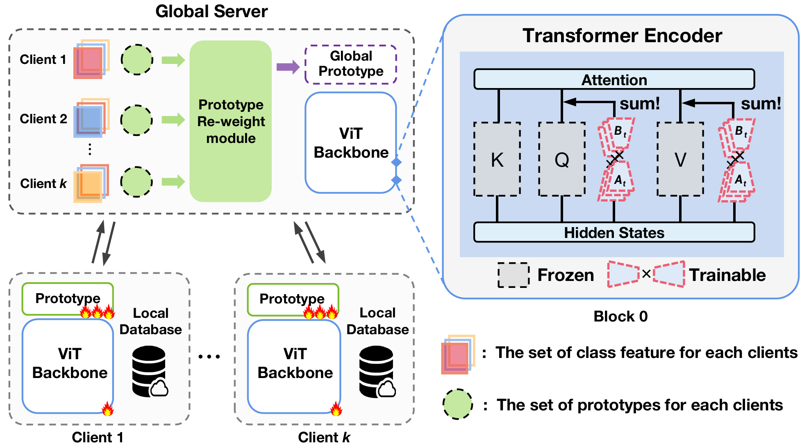

|
Haiyang Guo
I'm currently a first-year Ph.D. student at School of Advanced Interdisciplinary Sciences, University of Chinese Academy of Sciences, enrolled in the integrated M.S.-Ph.D. program, supervised by Prof. Xu-Yao Zhang and Prof. Cheng-Lin Liu. I previously studied at the Institute of Automation, Chinese Academy of Sciences, under the same supervision.
Before that, I obtained my Bachlor degree from University of Science and Technology Beijing, majoring in Artificial Intelligence.
My research focuses on continual learning for real-world applications, with an emphasis on multimodal continual learning and federated continual learning. I am also interested in other downstream tasks of MLLMs, including memory systems, model merging, and hallucination mitigation.
Email /
Google Scholar /
Github
|

|
News
-
[2025.06] One paper (FCIT) is accepted to ICCV 2025.
-
[2025.05] One papers (HiDe-LLaVA) is accepted to ACL 2025.
-
[2024.07] One paper (PILoRA) is accepted to ECCV 2024.
|
Publications
* indicates equal contribution
|

|
Federated Continual Instruction Tuning
Haiyang Guo, Fanhu Zeng, Fei Zhu, Wenzhuo Liu, Da-Han Wang, Jian Xu, Xu-Yao Zhang, Cheng-Lin Liu
International Conference on Computer Vision (ICCV), 2025
arXiv / Code
|

|
HiDe-LLaVA: Hierarchical Decoupling for Continual Instruction Tuning of Multimodal Large Language Model
Haiyang Guo*, Fanhu Zeng*, Ziwei Xiang, Fei Zhu, Da-Han Wang, Xu-Yao Zhang, Cheng-Lin Liu
Proceedings of the 63rd Annual Meeting of the Association for Computational Linguistics (ACL), 2025
Paper / arXiv / Code
|
|

|
PILoRA: Prototype Guided Incremental LoRA for Federated Class-Incremental Learning
Haiyang Guo, Fei Zhu, Wenzhuo Liu, Xu-Yao Zhang, Cheng-Lin Liu
The 18th European Conference on Computer Vision (ECCV), 2024
Paper / arXiv / Code
|
|
|
LLaVA-c: Continual Improved Visual Instruction Tuning
Wenzhuo Liu, Fei Zhu, Haiyang Guo, Longhui Wei, Cheng-Lin Liu
arXiv
|
|
|
A Comprehensive Survey on Continual Learning in Generative Models
Haiyang Guo, Fanhu Zeng, Fei Zhu, Jiayi Wang, Xukai Wang, Jingang Zhou, Hongbo Zhao, Wenzhuo Liu, Shijie Ma, Da-Han Wang, Xu-Yao Zhang, Cheng-Lin Liu
arXiv / Code
|

|
Parameter Efficient Merging for Multimodal Large Language Models with Complementary Parameter Adaptation
Fanhu Zeng, Haiyang Guo, Fei Zhu, Li Shen, Hao Tang
arXiv
|

|
Dynamic Knowledge Consolidation for Rehearsal-Free Continual Learning
Haiyang Guo, Fei Zhu, Fanhu Zeng, Bing Liu, Xu-Yao Zhang
arXiv
|

|
ModalPrompt: Dual-Modality Guided Prompt for Continual Learning of Large Multimodal Models
Fanhu Zeng, Fei Zhu, Haiyang Guo, Xu-Yao Zhang, Cheng-Lin Liu
arXiv / Code
|
© Haiyang Guo | Last updated: July, 2025
| |